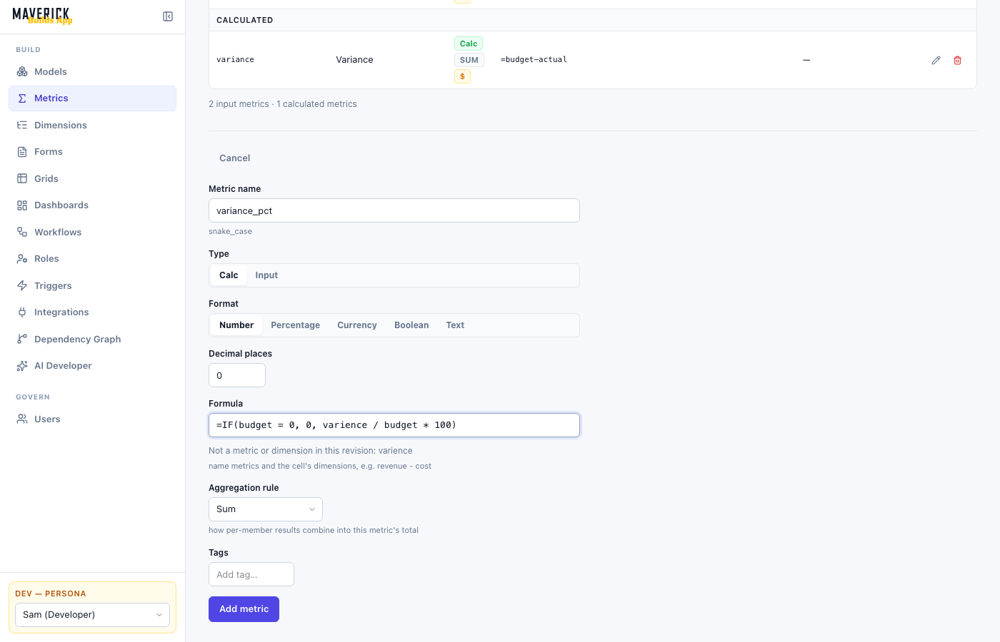

74 functions: 45 general (logic, math, argument aggregates, text, dates), 10 dimensional (PARENT, LOOKUP and eight conditional aggregations) and 19 time series, plus the two member references dimension and dimension.property.
A formula belongs to a calculated metric, never to a cell. You write it once, on the metric, and the engine evaluates it at every cell of the grid the metric is placed on: one value per combination of that grid's members, plus the totals. There is no cell-by-cell override and no "recalculate" button: every change that could alter a result recalculates it on the server before the screens refresh.
ABS(cr_var_pct) > threshold_pct reads each metric at the instance's members (its Dimension member fields), every other dimension at its total, and a name that is no metric reads the instance's context field of that key. True or non-zero takes the true route.Sidebar: Developer › Metrics

| Where | What it does for formulas |
|---|---|
| Add metric form | Metric name is the technical name formulas use (snake_case, for example gross_margin). With Type Calc, Formula takes the expression. Aggregation rule and Time summary decide the totals. As you type, names that are neither a metric nor a dimension of the revision are listed under the field ("Not a metric or dimension in this revision: …"). That is a hint: Add metric stays available, and the server then checks the whole formula and shows its message if it refuses it. |
| Row editor (edit icon) | Change the formula, the rule or the summary of an existing metric. Names that are neither a metric nor a dimension of the revision are listed under the field as you type ("Not a metric or dimension in this revision: …"); the hint never blocks Save, the server decides. |
| Recalc results banner | After a save, lists "revision → metric = value" for each affected total. |
| Warning triangle beside a formula | The last calculation of this metric failed at some or all cells. Hover it: "Calculation failing: n/m combos failed … (first error: …)". See chapter 5. |
| Used by column | The calculated metrics whose formulas read this one. |
The Dependency Graph screen (Developer › Dependency Graph) draws the same references as a graph. The AI Developer writes formulas through the same checks as the console.
dimension.property, PARENT, LOOKUP or the SUMIFS family over a dimension computes only once it is placed on a grid that has that dimension, because its cells are that grid's cells.=DAYSINMONTH(YEAR(START()), MONTH(START()))) is computed when the revision is activated or the metric is saved, not when an input changes.For each cell of the metric's grid, the engine evaluates the formula with every name bound to the cell:
| A metric name | That metric's value at the same members. An input with nothing recorded there reads as 0; a calculated metric reads its own result for that cell. |
| A dimension name | The code of the cell's member of that dimension (region is "DE" in the DE row). |
dimension.property | That member's property value, typed by the property's declaration (chapter 11). |
| A time function | Reads the same cell at other periods of the grid's time dimension (chapter 14). |
| LOOKUP, SUMIFS and family | Read the source metric at other members (chapters 12 and 13). |
A formula therefore describes one cell, and the engine applies it to all of them: =sales - cost is the margin of this region in this month.
A World row, an EMEA row, a Q1 column or the grand total is not the formula applied to a "total cell". It is decided by the metric's aggregation rule (Sum, Average, Count, Formula, Rate) across ordinary dimensions and its time summary across the time dimension. Chapter 15 explains both; the short version:
margin_pct at World is total margin ÷ total sales, never a sum or mean of percentages.At a total, a dimension that is not pinned has no single member, so a bare dimension name and dimension.property read blank there: IF(region = "EMEA", sales, 0) is 0 at the grand total.
A plain reference to a metric on another grid reads it at the members the two share. On a dimension the source has but the cell does not, it reads the source's total over that dimension (by the source's aggregation rule); a dimension of the cell that the source lacks is ignored. So from a [region, period] cell, fx_rate on FX [currency] is the total over all currencies, which is rarely what you want. To choose a member, use LOOKUP: LOOKUP(fx_rate, currency, region.currency) reads the rate of the region's own currency.
Where one dimension is a parent of another (a Region dimension above Country) or groups another by a property (an Area dimension over employees by their area property), a reference across them resolves through that relation; see the Developer Manual, Dimensions.
Every stored result is a number. TRUE and FALSE are stored as 1 and 0; a blank result stores nothing (the cell stays empty, and it is left out of totals); a text result is an error (#VALUE!). Text functions are therefore used inside a formula, in comparisons, criteria and member codes, not as its final result. The metric's Format (number, percentage, currency) only changes how the number is shown.
=revenue - cost
=IF(revenue = 0, 0, (revenue - cost) / revenue)
=ROUND(quantity * unit_price, 2)
={salary} * 0.25
=sales * region.factor
=SUMIFS(sales, region.segment, "Enterprise")
=LOOKUP(sales, region, PARENT(region))
=LAG(sales, 1, 0)
Leading = | Optional. Surrounding spaces are ignored. |
| Names | Metric technical names, dimension names, dimension.property, function names and keywords. Letters, digits and _, not starting with a digit. Case never matters: SALES, Sales and sales are the same metric (and a revision cannot hold two metrics, or two dimensions, whose names differ only in case). |
{name} | Any metric or dimension name in braces — the way to write one that is not a plain name: {Setup Item}, {P&L line}, {2026 plan} (plain names may be braced too: {hc_cost} + {software_cost}). Inside braces a dot is part of the name: {rev.eu} is a metric named rev.eu. |
dimension.property | Exactly one dot, directly between two names: employees.salary; a dimension whose name needs braces keeps them: {Cost Center}.p_and_l_line. region.a.b and region.2026 are refused. A property is not a dimension: to total by its values, use it as a SUMIFS range (SUMIFS(amount, {Cost Center}.p_and_l_line, "Revenue")). |
| Unknown names | A name that is neither a metric nor a dimension is refused when the metric is saved, with what it most likely meant: setup_item → the dimension is named "Setup Item", write {Setup Item}; p_and_l_line → a property of Cost Center, read {Cost Center}.p_and_l_line. |
| Numbers | 12, 1.5, .5, 1.5e3. No thousands separators, no % suffix (write * 0.5). |
| Text | In double quotes: "EMEA". A quote inside text is doubled: "say ""hi""". Text must be closed. |
| Booleans | TRUE, FALSE. |
| Dates | No date literal: use DATE(2026, 3, 31). Criteria and date properties take ISO text such as "2026-01-01". |
| Arguments | Separated by commas or semicolons: ROUND(x, 2) = ROUND(x; 2). |
Highest first. Operators on the same level work left to right.
| Level | Operators | Notes and examples |
|---|---|---|
| 1 | ( ), function calls | (1 + 2) * 3 = 9 |
| 2 | unary -, + | -2^2 = 4, as in Excel (the minus belongs to the 2) |
| 3 | ^ power | 2^10 = 1024; 2^3^2 = (2^3)^2 = 64, as in Excel; 2^-1 = 0.5 |
| 4 | * / | 10 / 4 = 2.5; x / 0 is #DIV/0! |
| 5 | + - | 1 + 2 * 3 = 7 |
| 6 | & joins text | "Q" & 1 = "Q1"; 1 + 2 & 3 = "33" |
| 7 | = <> < <= > >= | Result TRUE or FALSE: revenue - cost > 0; "a" & "b" = "AB" is TRUE |
Not part of the language: cell addresses (A1 is just an unknown name), ranges (A1:B2), array formulas, named ranges, the % suffix, and references to other workbooks.
| Type | Where it comes from | In arithmetic |
|---|---|---|
| Number | Metric values, number literals, number and date properties, most functions | Itself |
| Text | Quoted literals, a bare dimension (the member code), text properties, text functions | #VALUE! (1 + "a") |
| TRUE / FALSE | Comparisons, AND, OR, NOT, IF with no else | 1 / 0 (TRUE + TRUE = 2) |
| Blank | A property the member has no value for; a dimension at a total; PARENT of a root; a *VALUE function over a metric with time summary none | 0 |
| Error | A failed operation (chapter 5) | The error travels on |
"abc" = "ABC" is TRUE; "apple" < "Banana" is TRUE. Member codes compare the same way: region = "de" is TRUE in the DE row.1 = "1" is TRUE, so a numeric member code "100" equals 100. (Excel says FALSE.)region = "" is TRUE at a total.0.1 + 0.2 = 0.3 is TRUE, and so is 1 / 3 * 3 = 1; 1.00000000000001 = 1 is FALSE. The same holds for SUMIFS criteria and for a number used as a member code. A remainder on its own is still a number, though: IF(0.1 + 0.2 - 0.3, 1, 0) is 1, because the difference is 5.55e-17, not 0 (Excel agrees); compare with = instead.Where a number becomes text (&, CONCAT, LEN, a comparison with text) it is written with up to 15 significant digits and no exponent between 1e-9 and 1e21: "Total " & 1234567 is "Total 1234567", "" & (0.1 + 0.2) is "0.3". For a fixed number of decimals use TEXT(x, "0.00").
| Value | Produced by |
|---|---|
#DIV/0! | Division by zero; AVERAGE of no numbers; AVERAGEIFS with no recorded match; MOD by 0; CEILING/FLOOR with significance 0 |
#VALUE! | A value of the wrong type (text in arithmetic, text where a number is needed), a wrong number of arguments, an unknown keyword, MID or SUBSTITUTE given an impossible position |
#N/A | LOOKUP or TIMESUM naming a member that does not exist (or a blank one); IFS or SWITCH with nothing matching |
#NUM! | SQRT of a negative; a power that is not a real number ((-8)^(1/3)); DAYSINMONTH with a month outside 1–12; criteria matching more than 1,000,000 member combinations |
#NAME? | A name that is neither a metric nor a dimension (the save refuses these first) |
| Named codes | TIME_OFFSET_NOT_INTEGER, INVALID_TIME_MEMBER, TIME_DIMENSION_MISMATCH and others from the time and dimensional functions; see the Error index |
Errors travel. An operation on an error returns that error, so (a / 0) + 1 is #DIV/0!. Catch them where they start:
IFERROR(value, fallback) replaces any error: IFERROR(revenue / units, 0).IFNA(value, fallback) replaces only #N/A (a missing member), letting real mistakes show: IFNA(LOOKUP(sales, region, "XX"), 0).IF(units = 0, 0, revenue / units). The branch not taken is never evaluated.These functions evaluate only what they need. The branch not taken is never computed, so it can safely contain a division that would fail.
then when the condition is TRUE (or a non-zero number), otherwise else; without else, FALSE (stored as 0).
| IF(revenue = 0, 0, (revenue - cost) / revenue) | margin ratio, 0 when no revenue | 0.25 for 1200/900 |
| IF(zero = 0, 0, revenue / zero) | untaken branch never divides | 0 |
| IF(FALSE, 1) | no else | FALSE |
The value of the first TRUE condition. Arguments come in pairs; end with TRUE, fallback, because no match is #N/A.
| IFS(revenue > 2000, "high", revenue > 1000, "mid", TRUE, "low") | band | "mid" for 1200 |
| IFS(FALSE, 1) | nothing matches | #N/A |
TRUE when all / any argument is TRUE; NOT inverts. A number counts as TRUE when non-zero. AND stops at the first FALSE, OR at the first TRUE, so OR(TRUE, 1/0) is TRUE (Excel gives #DIV/0!).
| IF(AND(units > 5, OR(region = "UK", region = "US")), 10, 0) | two conditions | 10 or 0 |
| NOT(0) | TRUE |
IFERROR replaces any error with fallback; IFNA replaces only #N/A and lets every other error through.
| IFERROR(revenue / units, 0) | any error | 0 when units = 0 |
| IFNA(LOOKUP(sales, region, "XX"), -1) | missing member | -1 |
| IFNA(1 / 0, 7) | not #N/A | #DIV/0! |
Compares expression with each match as = does (text ignoring case) and returns the paired result; an odd last argument is the default. No match and no default is #N/A. At least three arguments.
| SWITCH(region.currency, "EUR", 1.1, "USD", 1, 0) | per-currency factor | 1.1 for EUR |
| SWITCH(MONTH(START()), 1, 0.1, 5, 0.25, 0) | by month | 0.25 in May |
All take numbers (TRUE/FALSE count as 1/0, blank as 0); text is #VALUE!.
| Function | Result | Examples |
|---|---|---|
| ABS(x) | Absolute value. | ABS(-3.5) = 3.5 |
| INT(x) | Rounds down to a whole number (toward minus infinity). | INT(7.8) = 7, INT(-7.2) = -8 |
| ROUND(x, digits) | Rounds half away from zero to digits decimals; negative digits round to tens, hundreds, … | ROUND(3.14159, 2) = 3.14, ROUND(-2.5, 0) = -3, ROUND(1234.5, -2) = 1200 |
| ROUNDUP(x, digits) | Rounds away from zero. | ROUNDUP(3.111, 2) = 3.12, ROUNDUP(-3.111, 2) = -3.12 |
| ROUNDDOWN(x, digits) | Rounds toward zero. | ROUNDDOWN(-3.199, 2) = -3.19, ROUNDDOWN(1299, -2) = 1200 |
| CEILING(x, significance) | Up to the next multiple of significance (toward plus infinity). Significance 0 is #DIV/0!. | CEILING(22, 5) = 25, CEILING(-22, 5) = -20 |
| FLOOR(x, significance) | Down to the previous multiple. Significance 0 is #DIV/0!. | FLOOR(22, 5) = 20, FLOOR(-22, 5) = -25 |
| MOD(x, divisor) | Remainder with the sign of the divisor, as in Excel. Divisor 0 is #DIV/0!. | MOD(23, 5) = 3, MOD(-7, 3) = 2, MOD(7, -3) = -2 |
| POWER(x, y) | Same as x^y; a result that is not a real number is #NUM!. | POWER(1.05, 2) = 1.1025, POWER(-8, 1/3) = #NUM! |
| SQRT(x) | Square root; negative is #NUM!. | SQRT(144) = 12 |
ROUND(1.005, 2) = 1.01, ROUND(2.675, 2) = 2.68, ROUNDUP(0.1 + 0.2, 1) = 0.3, ROUNDDOWN(0.7 * 3, 1) = 2.1, CEILING(0.1 + 0.2, 0.1) = 0.3. Digits that are not whole are truncated (ROUND(x, 2.7) rounds to 2 decimals).These combine the values you list in the formula, at the same cell. To add up a metric across members, use SUMIFS (chapter 13) or a total (chapter 15); across periods, use the time functions (chapter 14).
| Function | Result | Examples |
|---|---|---|
| SUM(a, b, …) | The sum. Blanks are skipped, TRUE counts 1, text is #VALUE!. | SUM(revenue, cost) = 2100 |
| AVERAGE(a, b, …) | The mean of the non-blank arguments; none is #DIV/0!. | AVERAGE(2, 4) = 3 |
| MIN(…) | The smallest; none is 0. | MIN(3, 1, 2) = 1 |
| MAX(…) | The largest; none is 0. | MAX(0, revenue - cost - 500) = 0 (floors at zero) |
| COUNT(…) | How many arguments are numbers or TRUE/FALSE (not text, blank or errors). | COUNT(1, "a", TRUE, 1/0) = 2 |
| COUNTA(…) | How many are not blank; errors are not counted (Excel counts them). | COUNTA(1, "a", "", 1/0) = 3 |
A metric with no recorded value at the cell reads as 0, not blank, so AVERAGE(q1_sales, q2_sales) averages a missing quarter in as 0.
A stored result is always a number, so text functions work inside a formula: in comparisons, criteria (chapter 13) and member codes (LOOKUP, TIMESUM). Numbers used as text read as described in chapter 4.
| Function | Result | Examples |
|---|---|---|
| CONCAT(a, b, …) | The arguments joined, like &. | CONCAT(region, "-", 2026) = "DE-2026" |
| TEXTJOIN(delimiter, skip_empty, a, …) | Joined with delimiter; with skip_empty TRUE, empty texts are left out. | TEXTJOIN("-", TRUE, "a", "", "b") = "a-b" |
| LEN(text) | Number of characters. | LEN("héllo") = 5, LEN(1234567) = 7 |
| LEFT(text [, n]) | The first n characters (default 1). Negative n is #VALUE!. | LEFT("abc", 2) = "ab" |
| RIGHT(text [, n]) | The last n characters (default 1). | RIGHT(region.currency, 2) = "UR" for EUR |
| MID(text, start, n) | n characters from position start (1 = first). Start below 1 or negative n is #VALUE!; past the end is "". | MID("abcdef", 2, 3) = "bcd" |
| UPPER(text) · LOWER(text) | Upper or lower case. | UPPER("aBc") = "ABC" |
| TRIM(text) | Removes leading and trailing spaces and collapses inner runs to one space. | TRIM(" a b ") = "a b" |
| TEXT(x, format) | A number as text. Formats: "0" or "#" (no decimals), "0.0", "0.00", "0.000"… (that many decimals, rounded as ROUND does), or a date layout containing yyyy with mm and dd (any case). Any other format gives the plain number; a text x is returned as is. | TEXT(3.14159, "0.00") = "3.14", TEXT(DATE(2026, 3, 5), "yyyy-mm-dd") = "2026-03-05", TEXT(START(), "yyyy-mm") = "2026-03" |
| SUBSTITUTE(text, old, new [, instance]) | Replaces every old (case-sensitive), or only the instance-th one (1 or more). Empty old changes nothing. | SUBSTITUTE("a-b-c", "-", "+", 2) = "a-b+c" |
Typical uses: IF(LEFT(region, 2) = "DE", …), a wildcard criterion built from the cell's member SUMIFS(sales, product, LEFT(product, 1) & "*"), or a member code assembled for LOOKUP LOOKUP(budget, period, TEXT(START(), "yyyy") & "-01").
A date is a serial number of days, as in Excel: 1900-03-01 is 61 and 2026-03-05 is 46086, so dates subtract to a number of days and compare as numbers. Date properties and START()/END() give serials; TEXT shows one as a date.
| Function | Result | Examples |
|---|---|---|
| TODAY() | Today's date (UTC). Recomputed only when the metric recalculates. | YEAR(TODAY()) |
| DATE(year, month, day) | The serial of that date. Months and days outside their range roll over. | DATE(2026, 13, 1) = 2027-01-01, DATE(2026, 3, 0) = 2026-02-28 |
| YEAR(d) · MONTH(d) · DAY(d) | The parts of a date. | MONTH(DATE(2026, 3, 5)) = 3 |
| DAYS(end, start) | end − start in days. | DAYS(DATE(2026, 3, 1), DATE(2026, 2, 1)) = 28 |
| EDATE(d, months) | The same day months later (negative: earlier); a day the target month lacks becomes its last day. | EDATE(DATE(2026, 1, 31), 1) = 2026-02-28 |
| EOMONTH(d, months) | The last day of the month months away. | EOMONTH(DATE(2026, 1, 31), 0) = 2026-01-31, EOMONTH(DATE(2024, 1, 31), 1) = 2024-02-29 |
| DAYSINMONTH(year, month) | Days in that month; a month outside 1–12 is #NUM!. | DAYSINMONTH(2024, 2) = 29 |
| DAYSINYEAR(year) | 366 in a leap year, else 365. | DAYSINYEAR(2026) = 365 |
With a time dimension, START() and END() (chapter 14) give the current period's first and last day, so the date functions work per period: DAYSINMONTH(YEAR(START()), MONTH(START())) is the days in each month, DAYS(START(), employees.hired) is tenure in days at each period's start.
segment (text), factor (number), opened (date) and currency (text): DE is Enterprise, 1.5, 2019-04-01, EUR; UK is SMB, 2, 2021-07-15, GBP; US is Enterprise, 0.5, 2020-01-10, USD. A currency dimension (EUR, GBP, USD) carries the input fx_rate (1.1, 1.25, 1). A monthly period time dimension runs FY26 › H1/H2 › Q1–Q4 › 2026-01 … 2026-12. The input sales on Plan [region, period] is 110, 55 and 197 for DE, UK and US in January (DE 100 + 10 per month, UK 50 + 5, US 200 − 3). Every number quoted below is what the engine produced for this model.A dimension's bare name is the code of the cell's member of that dimension: region is "DE" in the DE row and "EMEA" in the EMEA row. Where the dimension is not pinned (a total, or a row that leaves it open) it is blank.
| IF(region = "UK", sales * 1.2, sales) | one member differs | 66 for UK in Jan |
| IF(region = "EMEA", sales, 0) | at the grand total | 0 |
| IF(region = "", 1, 0) | "am I a total?" | 1 at a total |
The value of a declared property on the cell's member, typed by its declaration (Developer › Dimensions › Dimension Properties):
#VALUE!);yyyy-mm-dd value (anything else gives #VALUE!);A parent member has its own property values; it never inherits its children's. A property that is not declared is refused at save (UNKNOWN_PROPERTY), even if members carry values under that key.
| sales * region.factor | number property | 165 for DE in Jan |
| DAYS(START(), region.opened) | date property | days since opening |
| IF(region.segment = "enterprise", 1, 0) | text, any case | 1 for DE and US |
The code of the parent of the cell's member; blank at a root member or where the dimension is not pinned. The argument must be a bare dimension name. To read the parent's value, combine it with LOOKUP: LOOKUP(sales, region, PARENT(region)).
| IF(PARENT(region) = "EMEA", 1, 0) | 1 for DE and UK |
=. LOOKUP and TIMESUM match member codes exactly.The value of the metric source at the cell's own members, with each named dimension moved to the given member. It is the dimensional equivalent of XLOOKUP/INDEX/MATCH.
| LOOKUP(sales, region, "DE") | a fixed member | 110 in Jan, every row |
| sales / LOOKUP(sales, region, PARENT(region)) | share of parent | 0.6667 for DE in Jan (110 ÷ 165) |
| ROUND(sales * LOOKUP(fx_rate, currency, region.currency), 2) | a member from a property | 121 for DE in Jan |
| LOOKUP(sales, region, "US", period, "2026-01") | two dimensions | 197 |
| IFNA(LOOKUP(sales, region, region & "X"), -1) | member that does not exist | -1 |
SOURCE_MUST_BE_METRIC otherwise). Each dimension must be a bare dimension name (not dim.property, DIMENSION_ARGUMENT_REQUIRED), at most once."DE", checked at save: UNKNOWN_MEMBER), a bare dimension, PARENT(…), a property, text built with &. A number becomes its digits (1000000 → "1000000").#N/A, a failure of that cell. Wrap in IFNA when that can legitimately happen.DIMENSION_NOT_ON_SOURCE. Two dimensions that both relate to the same dimension of the source conflict: CONFLICTING_DIMENSION_ARGUMENTS.| Form | Result | Nothing matches |
|---|---|---|
| SUMIFS(source, range1, criterion1 [, …]) | Sum of source over the matching members | 0 |
| AVERAGEIFS(source, range1, criterion1 [, …]) | Mean of the recorded values | #DIV/0! |
| MINIFS / MAXIFS(source, range1, criterion1 [, …]) | Smallest / largest recorded value | 0 |
| COUNTIFS(range1, criterion1 [, …]) | Number of matching member combinations | 0 |
| SUMIF(range, criterion, source) | SUMIFS with one criterion, in Excel's argument order | 0 |
| AVERAGEIF(range, criterion, source) | AVERAGEIFS with one criterion | #DIV/0! |
| COUNTIF(range, criterion) | COUNTIFS with one criterion | 0 |
dimension.property (the members' typed property values are tested), or a metric whose dimensions are all the source's or related to them (its value is tested at every leaf combination of its dimensions; see A metric as the range below). A name that is both a dimension and a metric is the dimension.SUMIFS(sales, region.segment, "Enterprise") adds up March.#NUM!. Not allowed in an opening/closing recurrence.| Criterion | Matches |
|---|---|
"Enterprise", "=Enterprise" | Equal, ignoring case |
"<>GBP" | Not equal (blank members included) |
">=1", "<0.5" | A numeric comparison with a number property; against codes and text properties the comparison is textual |
">=2020-01-01" | A date comparison with a date property (ISO text) |
"E*", "?1", "star~*" | * any run of characters, ? one character, ~ makes the next one literal (in equality and inequality) |
"" or "=" | Blank (no value) |
"<>" | Not blank |
| an expression | Evaluated at the cell first: region.segment (the cell's own segment), "<>" & region (every other member), "<=" & period (this period and earlier), LEFT(product, 1) & "*" |
a number, 100 | Equal to 100; against a member code it compares as the text "100" |
A text operand never equals or orders a number property; a member whose property value cannot be read as its type matches only "<>…". An ordering (<, > …) never matches a blank.
| SUMIFS(sales, region.segment, "Enterprise") | by property | 307 in Jan (DE + US) |
| AVERAGEIFS(sales, region.segment, region.segment) | peers of the cell | 153.5 for DE and US, 55 for UK |
| COUNTIFS(region.segment, "Enterprise", region.factor, ">=1") + COUNTIF(region, "U*") | counts members | 1 + 2 = 3 |
| MAXIFS(sales, region.currency, "<>GBP") - MINIFS(sales, region.currency, "<>GBP") | spread | 87 in Jan |
| SUMIF(region.opened, ">=2020-01-01", sales) | date property | 252 in Jan (UK + US) |
| ROUND(sales / SUMIFS(sales, region, "*") * 100, 3) | share of all regions | 30.387 for DE in Jan |
| SUMIFS(sales, period, "<=" & period) | running total along time | same as YEARTODATE(sales) here |
A pick-list metric (format Pick-list) holds, in each cell, a member of one dimension. In a formula it reads as that member's code, as text — blank where nothing is chosen — so it compares and joins like a bare dimension name and can name a LOOKUP member. Adding it up is #VALUE!; count it with COUNTIFS. A calculated pick-list's formula gives a member code, stored as that member; a code the dimension does not have is #N/A.
The example: an activity dimension (A1, A2, A3) carries the pick-lists act_region (a member of region) and act_status (of a dimension with Draft and Cancelled) and the input strat: A1 is US, Draft, 10; A2 US, Cancelled, 5; A3 DE, Draft, 7. A metric on [region]:
| Formula | What it reads | Result |
|---|---|---|
| SUMIFS(strat, act_region, region) | the activities whose Region cell holds the row's region | 15 for US, 7 for DE |
| SUMIFS(strat, act_region, region, act_status, "<>Cancelled") | …that are not cancelled | 10 for US |
| COUNTIFS(act_status, "Draft") | activities whose status is Draft | 2 |
| IF(act_status = "Cancelled", 0, strat) | on [activity]: the cell's own status | 0 for A2 |
| IF(by_region > 12, "Review", "Within_Range") | a calculated pick-list over a status dimension | Review for US |
A metric range ranges over every dimension of its metric — like a criterion on each — and, being read at other members, is a dependency of the formula: changing an activity's Region recalculates the total. A numeric metric can be a range too: SUMIFS(sales, sales, ">=100").
Two readings to tell apart on a cell that carries every dimension of the source — say a Region × Product grid. SUMIFS(weighted_base, Region, Region) keeps the cell's own Product too, so it is the cell's own value, not the region's total; the region's total over products is LOOKUP(weighted_base, Product, "All Products"), the source at the products' total member. The AI Developer's plan check warns of the first.
TIME_DIMENSION_REQUIRED, MULTIPLE_TIME_DIMENSIONS).A time function is evaluated at each leaf period, with every other member of the cell held fixed: PREVIOUS(sales) in the DE row reads DE's sales of the previous month, never another region's. The functions move along the leaf periods in date order. They are never evaluated at an aggregate period: Q1, H1 and FY26 show their leaves reduced by the metric's time summary (chapter 15).
The first argument of the position and window functions is any expression, evaluated at the other period (LAG(sales * region.factor, 1, 0)). A substitute or reset is evaluated at the current period. Functions nest and their offsets add up: PREVIOUS(LAG(sales, 2, 0)) reads three periods back.
| Function | Reads | Outside the periods |
|---|---|---|
| PREVIOUS(x) | x one period back | 0 |
| NEXT(x) | x one period ahead | 0 |
| LAG(x, n, substitute [, mode]) | x n periods back (negative n looks ahead) | substitute |
| LEAD(x, n, substitute [, mode]) | x n periods ahead | substitute |
| OFFSET(x, n, substitute) | x at n periods (negative: back); LEAD without a mode | substitute |
mode (a bare keyword): NONSTRICT (default) accepts any n; SEMISTRICT returns the substitute when n < 0; STRICT when n ≤ 0.
Offsets. n may be a whole-number literal or any expression that gives a whole number at the current period: a metric (LAG(sales, lag_months, 0)), a property (LAG(sales, ROUND(region.factor, 0), 0)), an IF. A literal like 1.5 is refused at save; an expression that gives a fraction fails that cell with TIME_OFFSET_NOT_INTEGER.
Reduces x over the periods from current + start to current + end, inclusive. One argument: every period. Two: from current + start to the last period. Periods outside the range are ignored; an empty window (start after end) is 0 for every method. start and end must be whole-number literals (MOVING_WINDOW_NOT_LITERAL otherwise).
| MOVINGSUM(sales, -2, 0) | trailing three periods | |
| MOVINGSUM(sales, -2, 0, AVERAGE) | trailing three-period average | |
| MOVINGSUM(sales, 1, 3, MAX) | peak of the next three |
CUMULATE is the running total from the first period through the current one. With reset, a period where it is TRUE starts a new run (its own value included): CUMULATE(sales, MOD(MONTH(START()), 3) = 1) restarts every quarter. DECUMULATE is x minus x of the previous period (in the first period, x itself).
| Function | Result | Leaf granularity allowed |
|---|---|---|
| MONTHTODATE(x) | Sum of x from the start of the month through the current period | day |
| QUARTERTODATE(x) | … of the quarter | day, week, month |
| HALFYEARTODATE(x) | … of the half year | day, week, month, quarter |
| YEARTODATE(x) | … of the fiscal year | day, week, month, quarter, half year |
| MONTHVALUE(m) · QUARTERVALUE(m) · HALFYEARVALUE(m) · YEARVALUE(m) | Metric m over the whole month / quarter / half / fiscal year containing the current period, reduced by m's own time summary; periods with nothing recorded are skipped; a summary of none gives blank | as the matching *TODATE |
INVALID_TIME_MEMBER, as does a current period that straddles the boundary (a week across a quarter end).SOURCE_MUST_BE_METRIC), and that metric must be dimensioned by the same time dimension (TIME_DIMENSION_MISMATCH). With summary last they give the last recorded value of the period (a closing balance); with sum, the period's total.| ROUND(sales / YEARVALUE(sales) * 100, 4) | share of the year | 6.5657 for DE in March (130 ÷ 1980) |
| ROUND(QUARTERTODATE(sales) / QUARTERVALUE(sales), 4) | quarter progress | 0.6389 for DE in Feb (230 ÷ 360) |
Reduces x over the periods from start to end, given as period codes ("2026-01", not labels or dates); an aggregate code means its first leaf as start and its last leaf as end, so TIMESUM(sales, "Q2", "Q2") is Q2. Without a range it covers every period. Start after end is an empty range, 0. An unknown code is refused when the metric is placed on its grid (UNKNOWN_MEMBER) and fails the cell with #N/A at run time. Exactly 1, 3 or 4 arguments.
| TIMESUM(sales, "Q2", "Q2") | fixed quarter, every period | DE: 450 |
| TIMESUM(sales, "H1", "H1", MAX) | peak month of H1 | DE: 160 |
| TIMESUM(sales, "2026-01", "2026-03", AVERAGE) | Q1 average | DE: 120 |
The first and last day of the current leaf period as date serials (END is inclusive): DAY(END()) is 31 in January; DATE(2026, MONTH(START()), 15) - START() is 14 in every month; TEXT(START(), "yyyy-mm") is the month's code on a monthly axis.
Four monthly periods with sales = 100, 120, 80, 150:
| Formula | Jan | Feb | Mar | Apr |
|---|---|---|---|---|
PREVIOUS(sales) | 0 | 100 | 120 | 80 |
NEXT(sales) | 120 | 80 | 150 | 0 |
LAG(sales, 2, 0) | 0 | 0 | 100 | 120 |
LEAD(sales, 1, 0) | 120 | 80 | 150 | 0 |
OFFSET(sales, -1, 0) | 0 | 100 | 120 | 80 |
MOVINGSUM(sales, -2, 0) | 100 | 220 | 300 | 350 |
MOVINGSUM(sales, -2, 0, AVERAGE) | 100 | 110 | 100 | 116.6667 |
CUMULATE(sales) | 100 | 220 | 300 | 450 |
DECUMULATE(sales) | 100 | 20 | -40 | 70 |
A formula cycle is normally refused. The one exception is a cycle that time breaks, such as a balance carried forward:
opening = LAG(closing, 1, 100) time summary: first closing = opening + flow time summary: last
Each period's opening is the previous period's closing (100 before the first), so the engine can compute period by period. Create one of the two with a placeholder formula (for example =flow * 0), create the other, then edit the first to its real formula. The rules:
PREVIOUS, LAG(x, 1, …), LEAD(x, 1, …)), all in one direction. Same-period reads must not themselves form a loop.TEMPORAL_CYCLE_NOT_CAUSAL.dimension, dimension.property and PARENT are allowed.A formula computes the leaf cells (one member of every dimension, and a dated period on the time axis). Everything above them — EMEA, World, Q1, FY26, the grand total — comes from two settings on the metric, which you choose in the Add metric form or the row editor.
| Rule | Value at a parent member or total | Use it for |
|---|---|---|
| Sum | The sum of every leaf under it (a leaf with no value adds 0). | Amounts: sales, cost, margin, headcount |
| Average | The mean of the leaves under it that have a value; never a mean of the children's means. If the formula does not depend on the members (no dimension, property or PARENT in it), it is instead evaluated once on the totalled inputs, like Formula. | Levels that are averaged, such as a score |
| Count | The number of leaves under it whose value is recorded and not 0. | "How many regions are active" |
| Formula | The metric's own formula evaluated on the totalled inputs. Calculated metrics only. | Ratios and percentages: margin_pct at World is total margin ÷ total sales |
| Rate | The total of a Numerator metric divided by the total of a Denominator metric, both chosen in the form. | Blended rates: an average price is total revenue ÷ total units |
Every level combines the leaves directly, however many levels up it is, so a World row always equals the grand total. A cell with no result (blank, or failed) is left out.
On a grid with a time dimension, each metric also has a Time summary — how an aggregate period (Q1, H1, FY26) reduces its leaf periods: sum (flows such as sales), last (a closing balance), first (an opening balance), average, min, max, or none (no time total: the aggregate period stays empty). Periods with nothing recorded are skipped, never averaged in as 0.
margin_pct for FY26 is the year's margin ÷ the year's sales, not a sum of monthly percentages.| Metric | Aggregation rule | Time summary |
|---|---|---|
sales - cost | Sum | sum |
IF(sales = 0, 0, ROUND((sales - cost) / sales * 100, 1)) | Formula | (Formula applies) |
revenue / units (price) | Rate: revenue ÷ units | (Rate applies) |
LAG(closing, 1, 100) (opening) | Sum | first |
opening + flow (closing) | Sum | last |
headcount (input) | Sum | last (or average) |
YEARVALUE(sales) | Sum | none, if a yearly figure repeated per month should not add up |
A business user may have members hidden from them (Business Admin › access rules). Most metrics are then recomputed from what that user can see. A metric that reads other cells — a time function, LOOKUP, the SUMIFS family, TIMESUM or a *VALUE function — is shown from the stored result instead, and a cell whose result was built from a hidden member is withheld: blank ("—") in the grid, a missing point in a chart. A total that includes a withheld cell is withheld too. The engine never recomputes such a cell from the visible part alone, because that would show a number the model never produced.
The formulas that read the model were computed live, cell by cell, on the example model (chapter 11) by cmd/verify-formula-catalogue; the one-line arithmetic ones are asserted by the function catalogue test.
| Need | Formula | Notes |
|---|---|---|
| Margin % | IF(sales = 0, 0, ROUND((sales - cost) / sales * 100, 1)) | Rule Formula, so totals are true ratios |
| Unit price | ROUND(sales / units, 2) | Rule Rate (sales ÷ units) for totals |
| Guarded division | IFERROR(sales / units, 0) or IF(units = 0, 0, sales / units) | The IF form hides only the case you expect |
| Growth vs previous period | IF(PREVIOUS(sales) = 0, 0, ROUND(sales / PREVIOUS(sales) - 1, 4)) | First period: 0 |
| Share of the parent member | sales / LOOKUP(sales, region, PARENT(region)) | DE in Jan: 0.6667 |
| Share of all members | ROUND(sales / SUMIFS(sales, region, "*") * 100, 3) | Leaves only, so no double counting |
| Share of the year | ROUND(sales / YEARVALUE(sales) * 100, 4) | Uses sales' time summary |
| Currency conversion | ROUND(sales * LOOKUP(fx_rate, currency, region.currency), 2) | Rate picked by the region's own currency |
| Year to date in group currency | YEARTODATE(sales * LOOKUP(fx_rate, currency, region.currency)) | Time function over a lookup |
| Quarter progress | ROUND(QUARTERTODATE(sales) / QUARTERVALUE(sales), 4) | 1 in a quarter's last month |
| Running total that restarts each quarter | CUMULATE(sales, MOD(MONTH(START()), 3) = 1) | Same as QUARTERTODATE on a January fiscal year |
| Trailing three-month average | MOVINGSUM(sales, -2, 0, AVERAGE) | Averages only the months that exist at the start |
| Previous period's value of a ratio | LAG(share_parent, 1, 0) | Any calculated metric can be shifted |
| Previous period's segment total | PREVIOUS(SUMIFS(sales, region.segment, "Enterprise")) | Any expression can be shifted |
| Lag set per member | LAG(sales, ROUND(region.factor, 0), 0) | Dynamic offset from a property |
| Lag set per cell | LAG(sales, lag_n, -5, STRICT) | lag_n = 0 gives the substitute |
| Average of the cell's peers | AVERAGEIFS(sales, region.segment, region.segment) | Criterion from the cell's own property |
| Everyone else | AVERAGEIF(region, "<>" & region, sales) | Built criterion |
| Running total by period code | SUMIFS(sales, period, "<=" & period) | Codes order as text: use sortable codes (2026-01) |
| Days since a date property | DAYS(START(), region.opened) | Per period |
| Normalise to a 30-day month | ROUND(sales / DAYSINMONTH(YEAR(START()), MONTH(START())) * 30, 2) | |
| Flag the first quarter | IFS(START() < DATE(2026, 4, 1), "Q1", END() > DATE(2026, 9, 30), "Q4", TRUE, "mid") = "Q1" | Stores 1 or 0 |
| Opening / closing balance | opening = LAG(closing, 1, 100), closing = opening + flow | Summaries first / last |
| A band from thresholds | IFS(sales > 250, 3, sales > 150, 2, TRUE, 1) | End with TRUE |
| Floor at zero | MAX(0, sales - cost - 500) | |
| Round up to a pack size | ROUNDUP(units / 12, 0) * 12 or CEILING(units, 12) |
Saving a metric (the Add metric form, the row editor or the AI Developer) checks the whole formula against the revision. A refused formula is not saved, and the message appears under the form, as below.
| Formula | Message (abridged) | Fix |
|---|---|---|
ROUND(sales) | #VALUE!: ROUND: wrong number of arguments (1); it takes 2 arguments | Add the missing argument (Part II lists every signature) |
IFS(sales > 0, 1, FALSE) | IFS: … it takes condition, value pairs | End with TRUE, fallback |
VLOOKUP(sales, 1, 2) | formula calls unknown function "VLOOKUP" (available: …) | Use LOOKUP by member |
nonexistent * 2 | formula references unknown metric or dimension "nonexistent" in this revision | Check the name (case does not matter) and the revision |
sales +, sales * 50% | formula does not parse: unexpected end of formula / unexpected token "%" | Complete the expression; write * 0.5 |
IF(region = "DE, 1, 0) | the text starting at position 12 has no closing quote | Close the text |
bad_self + 1 in bad_self | formula references the metric it defines — a metric can only read its own value at another period | Use PREVIOUS(bad_self) if a carry-forward is meant |
margin_pct = margin / sales while margin reads margin_pct | TEMPORAL_CYCLE_NOT_CAUSAL: dependency cycle is not broken by time … | Remove the loop, or break it with a time offset (chapter 14) |
LOOKUP(sales + 1, region, "DE") | SOURCE_MUST_BE_METRIC: the source must be a metric name | Make the expression its own metric |
LOOKUP(sales, region, "ZZ") | UNKNOWN_MEMBER: dimension region has no member "ZZ" | Use an existing code (exact case) |
sales * region.nope | UNKNOWN_PROPERTY: … declare it on the dimension first | Declare the property (Dimensions › Dimension Properties) |
LOOKUP(sales, region.segment, "SMB") | DIMENSION_ARGUMENT_REQUIRED: expected a dimension name | Use a bare dimension; filter by property with SUMIFS |
LOOKUP(sales, currency, "EUR") | DIMENSION_NOT_ON_SOURCE: … currency is not one of sales's dimensions | Look up along a dimension the source has |
LEN(act_comment), COUNTIFS(act_comment, "<>") | TEXT_METRIC_IN_FORMULA: act_comment is a text metric: its cells hold notes, which formulas do not read | Keep the notes for people; count with a pick-list or a number beside them |
LAG(sales, 1.5, 0) | TIME_OFFSET_NOT_INTEGER: the offset must be a whole number | Whole numbers only |
MOVINGSUM(sales, lag_n, 0) | MOVING_WINDOW_NOT_LITERAL | Window bounds are literals |
MOVINGSUM(sales, -1, 0, MEDIAN) | #VALUE!: unknown keyword MEDIAN (expected one of SUM, AVERAGE, MIN, MAX) | Use one of the keywords |
| LOOKUP or a dynamic offset in an opening/closing pair | TEMPORAL_CYCLE_NOT_CAUSAL: closing calls LOOKUP … / reads closing over an unbounded time range | Move the lookup into a metric outside the cycle; use a fixed offset |
A metric Sales beside sales, a dimension Region beside region | METRIC_NAME_TAKEN / DIMENSION_NAME_TAKEN (names are compared without regard to case) | Choose another name |
Some rules depend on where a metric sits. They are checked again when a metric is placed on a grid, when a dimension is removed from a grid, and when a revision is activated:
DIMENSION_NOT_ON_SOURCE), when the source was not yet on a grid at save;TIMESUM period code that is not a period of the grid's time dimension (UNKNOWN_MEMBER), and a literal LOOKUP code renamed since;TIME_DIMENSION_REQUIRED, MULTIPLE_TIME_DIMENSIONS).region.old becomes region.new).PROPERTY_IN_USE, DIMENSION_IN_USE, MEMBER_IN_USE), and the message lists the metrics to change first.#N/A, and activation refuses the revision until the formula is changed.METRIC_IN_USE (HTTP 409), and the message lists those metrics: "units is read by arg_aggs, logic_mix, price; change those metrics first, then delete it". The Used by column shows the formula readers in advance, and the confirmation names them. A metric reading only itself (PREVIOUS(x) in x) does not block its own delete.| Symptom | Likely cause and what to do |
|---|---|
| A warning triangle beside the formula | Some cells failed. Hover it for the first error; typical: a division by a zero that is not "no data", a member code that does not exist (#N/A), a dynamic offset that is not whole. |
| A cell is empty ("—") | Its formula failed there; or it read only zeros and failed (no data); or the result is blank (a property the member has no value for, a *VALUE of a metric with summary none); or, for a business user, it is withheld (chapter 15). |
| A total looks wrong | Check the aggregation rule and time summary (chapter 15). Ratios need Formula or Rate; balances need last/first. |
| 0 where a value was expected | A metric with nothing recorded reads 0. A plain reference to a metric on another grid reads its total over the dimensions the cell lacks: use LOOKUP to choose a member. A dimension or property at a total is blank. |
| A condition never matches | Numbers compare on 15 significant digits, so a real difference beyond rounding noise is the cause: compare ROUND(x, 2) to ignore cents. Text compares ignoring case, so case is not the problem. A number against text compares as text. |
| A metric that reads no other metric did not update | It recalculates when saved or when the revision is activated, not when inputs change (it has no inputs). |
DIM_CONTEXT_REQUIRED or TIME_CONTEXT_REQUIRED | A dimensional or time function evaluated where it has no cell: place the metric on a grid with the dimensions it names. |
A1, A1:B9), external workbooks, array formulas, named ranges, the % suffix.x = "" for blank), functions listing a member's children (LOOKUP of the parent already combines them).| Here | Excel |
|---|---|
| Formulas name metrics and dimensions, evaluated per cell of a grid | Formulas name cells |
1 = "1" is TRUE (a number against text compares as text) | FALSE |
AND and OR stop at the deciding argument: OR(TRUE, 1/0) is TRUE | #DIV/0! |
| COUNTA does not count errors | Counts them |
CEILING(x, 0) is #DIV/0! | 0 |
| COUNTIFS counts matching members | Counts matching cells |
A missing metric value reads 0 in AVERAGE(a, b) | An empty cell is skipped |
TEXT supports 0, #, 0.00… and yyyy/mm/dd date layouts | The full format language |
| Function | Signature | Result | Chapter |
|---|---|---|---|
| ABS | ABS(x) | Absolute value | 7 |
| AND | AND(a, b, …) | TRUE when every argument is TRUE | 6 |
| AVERAGE | AVERAGE(a, b, …) | Mean of the non-blank arguments | 8 |
| AVERAGEIF | AVERAGEIF(range, criterion, source) | Mean of source over the matching members | 13 |
| AVERAGEIFS | AVERAGEIFS(source, range, criterion, …) | Mean of source over the matching members | 13 |
| CEILING | CEILING(x, significance) | Up to a multiple | 7 |
| CONCAT | CONCAT(a, b, …) | Joins text | 9 |
| COUNT | COUNT(a, b, …) | How many are numbers or TRUE/FALSE | 8 |
| COUNTA | COUNTA(a, b, …) | How many are not blank | 8 |
| COUNTIF | COUNTIF(range, criterion) | How many members match | 13 |
| COUNTIFS | COUNTIFS(range, criterion, …) | How many member combinations match | 13 |
| CUMULATE | CUMULATE(x [, reset]) | Running total along time | 14 |
| DATE | DATE(year, month, day) | A date serial | 10 |
| DAY | DAY(date) | Day of the month | 10 |
| DAYS | DAYS(end, start) | Days between two dates | 10 |
| DAYSINMONTH | DAYSINMONTH(year, month) | Days in a month | 10 |
| DAYSINYEAR | DAYSINYEAR(year) | 365 or 366 | 10 |
| DECUMULATE | DECUMULATE(x) | Change from the previous period | 14 |
| EDATE | EDATE(date, months) | Same day, months later | 10 |
| END | END() | Last day of the current period | 14 |
| EOMONTH | EOMONTH(date, months) | Last day of a month | 10 |
| FLOOR | FLOOR(x, significance) | Down to a multiple | 7 |
| HALFYEARTODATE | HALFYEARTODATE(x) | Sum from the half-year start | 14 |
| HALFYEARVALUE | HALFYEARVALUE(metric) | The metric over the whole half year | 14 |
| IF | IF(condition, then [, else]) | Choice | 6 |
| IFERROR | IFERROR(value, fallback) | Replaces any error | 6 |
| IFNA | IFNA(value, fallback) | Replaces #N/A | 6 |
| IFS | IFS(condition, value, …) | First true condition | 6 |
| INT | INT(x) | Rounds down to a whole number | 7 |
| LAG | LAG(x, n, substitute [, mode]) | x n periods back | 14 |
| LEAD | LEAD(x, n, substitute [, mode]) | x n periods ahead | 14 |
| LEFT | LEFT(text [, n]) | First characters | 9 |
| LEN | LEN(text) | Number of characters | 9 |
| LOOKUP | LOOKUP(source, dimension, member, …) | The source at other members | 12 |
| LOWER | LOWER(text) | Lower case | 9 |
| MAX | MAX(a, b, …) | Largest argument | 8 |
| MAXIFS | MAXIFS(source, range, criterion, …) | Largest recorded matching value | 13 |
| MID | MID(text, start, n) | Characters from a position | 9 |
| MIN | MIN(a, b, …) | Smallest argument | 8 |
| MINIFS | MINIFS(source, range, criterion, …) | Smallest recorded matching value | 13 |
| MOD | MOD(x, divisor) | Remainder | 7 |
| MONTH | MONTH(date) | Month number | 10 |
| MONTHTODATE | MONTHTODATE(x) | Sum from the month start (daily axis) | 14 |
| MONTHVALUE | MONTHVALUE(metric) | The metric over the whole month (daily axis) | 14 |
| MOVINGSUM | MOVINGSUM(x [, start [, end [, method]]]) | Reduction over a window of periods | 14 |
| NEXT | NEXT(x) | x one period ahead | 14 |
| NOT | NOT(a) | Inverts | 6 |
| OFFSET | OFFSET(x, n, substitute) | x n periods away | 14 |
| OR | OR(a, b, …) | TRUE when any argument is TRUE | 6 |
| PARENT | PARENT(dimension) | Parent member's code | 11 |
| POWER | POWER(x, y) | x to the power y | 7 |
| PREVIOUS | PREVIOUS(x) | x one period back | 14 |
| QUARTERTODATE | QUARTERTODATE(x) | Sum from the quarter start | 14 |
| QUARTERVALUE | QUARTERVALUE(metric) | The metric over the whole quarter | 14 |
| RIGHT | RIGHT(text [, n]) | Last characters | 9 |
| ROUND | ROUND(x, digits) | Half away from zero | 7 |
| ROUNDDOWN | ROUNDDOWN(x, digits) | Toward zero | 7 |
| ROUNDUP | ROUNDUP(x, digits) | Away from zero | 7 |
| SQRT | SQRT(x) | Square root | 7 |
| START | START() | First day of the current period | 14 |
| SUBSTITUTE | SUBSTITUTE(text, old, new [, instance]) | Replaces text | 9 |
| SUM | SUM(a, b, …) | Sum of the arguments | 8 |
| SUMIF | SUMIF(range, criterion, source) | Sum of source over the matching members | 13 |
| SUMIFS | SUMIFS(source, range, criterion, …) | Sum of source over the matching members | 13 |
| SWITCH | SWITCH(expression, match, result, … [, default]) | Value by match | 6 |
| TEXT | TEXT(x, format) | A number as text | 9 |
| TEXTJOIN | TEXTJOIN(delimiter, skip_empty, a, …) | Joins with a delimiter | 9 |
| TIMESUM | TIMESUM(x [, start, end [, method]]) | Reduction over a range of period codes | 14 |
| TODAY | TODAY() | Today's date | 10 |
| TRIM | TRIM(text) | Removes extra spaces | 9 |
| UPPER | UPPER(text) | Upper case | 9 |
| YEAR | YEAR(date) | Year | 10 |
| YEARTODATE | YEARTODATE(x) | Sum from the fiscal-year start | 14 |
| YEARVALUE | YEARVALUE(metric) | The metric over the whole fiscal year | 14 |
Also: a bare dimension name (the cell's member code) and dimension.property (a member property), chapter 11. Keywords in fixed positions: STRICT, SEMISTRICT, NONSTRICT (LAG, LEAD) and SUM, AVERAGE, MIN, MAX (MOVINGSUM, TIMESUM).
| Code | Meaning | Chapter |
|---|---|---|
#DIV/0! | Division by zero, AVERAGE of nothing, AVERAGEIFS with no recorded match, MOD by 0, CEILING/FLOOR with significance 0 | 5 |
#VALUE! | Wrong type; wrong number of arguments (refused at save); unknown keyword; impossible text position | 5, 17 |
#N/A | A member or period code that does not exist, or a blank one (LOOKUP, TIMESUM); IFS or SWITCH with no match | 5, 12 |
#NUM! | SQRT of a negative, a non-real power, DAYSINMONTH month outside 1–12, criteria over 1,000,000 combinations | 5 |
#NAME? | A name that is neither a metric nor a dimension (the save refuses these); a deleted metric still named by a formula | 5, 17 |
SOURCE_MUST_BE_METRIC | The source of LOOKUP, the SUMIFS family or a *VALUE function is not a metric name | 12–14 |
DIMENSION_ARGUMENT_REQUIRED | A dimension argument is not a bare dimension name | 11–13 |
UNKNOWN_PROPERTY | dimension.property names a property that is not declared | 11 |
UNKNOWN_MEMBER | A literal LOOKUP member or TIMESUM period code does not exist (save, placement, activation) | 12, 14 |
DIMENSION_NOT_ON_SOURCE | A LOOKUP or criteria dimension is neither the source's nor related to it | 12, 13 |
CONFLICTING_DIMENSION_ARGUMENTS | Two dimension arguments relate to the same dimension of the source | 12, 13 |
DIM_CONTEXT_REQUIRED | A dimensional function evaluated where there is no cell | 17 |
TIME_CONTEXT_REQUIRED | A time function evaluated where there is no period | 14, 17 |
TIME_DIMENSION_REQUIRED | A time function on a grid without a time dimension | 14 |
MULTIPLE_TIME_DIMENSIONS | A time function on a grid with two time dimensions | 14 |
TIME_DIMENSION_MISMATCH | A *VALUE source is not dimensioned by the cell's time dimension | 14 |
INVALID_TIME_MEMBER | A granularity too coarse for the function, or a period straddling its boundary | 14 |
TIME_OFFSET_NOT_INTEGER | An offset or window bound that is not a whole number | 14 |
MOVING_WINDOW_NOT_LITERAL | A MOVINGSUM window bound that is not a literal | 14 |
TEMPORAL_CYCLE_NOT_CAUSAL | A cycle not broken by time, or LOOKUP / SUMIFS / an unbounded time read inside a recurrence | 14, 17 |
METRIC_NAME_TAKEN, DIMENSION_NAME_TAKEN | The revision already has a metric (dimension) of that name, in any case | 17 |
METRIC_IN_USE, PROPERTY_IN_USE, DIMENSION_IN_USE, MEMBER_IN_USE | A delete refused while a formula (or, for a metric, a Rate total) uses what would be deleted | 17 |